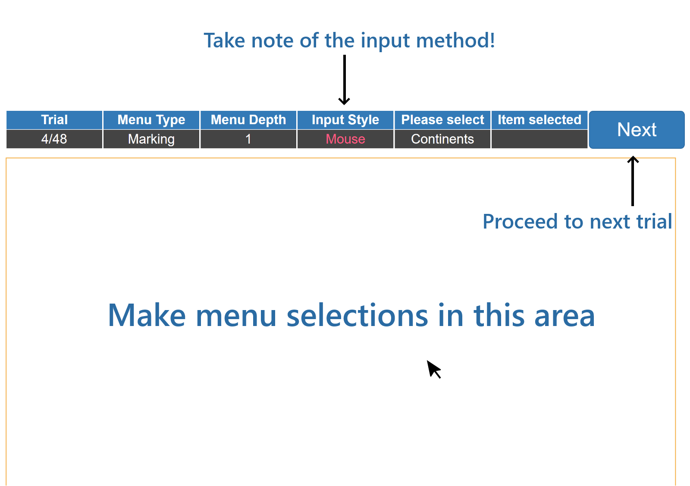

Welcome, participant! 🙂
This section will explain everything you need to know about the experiment before we begin.
You will be selecting a total of 48 items from both the marking and radial menu. The menu will have different level of depths, and you will be prompted to switch between using the mouse or the trackpad several times during the experiment.
The entire process will take between 10-15 minutes. Your schedule is as follows:
This is the interface of the test environment you will be working with.
Selection by stroking in the direction of the target item.
Clothing > Hats
Note: If you can remember the location of the target item, you can make a fast stroke instead of waiting for the menu to pop up.
Selection from a circular context menu.
Food > Vegetables
Feel free to ask if you have any further questions. Once you are ready, select your participant ID below to proceed.